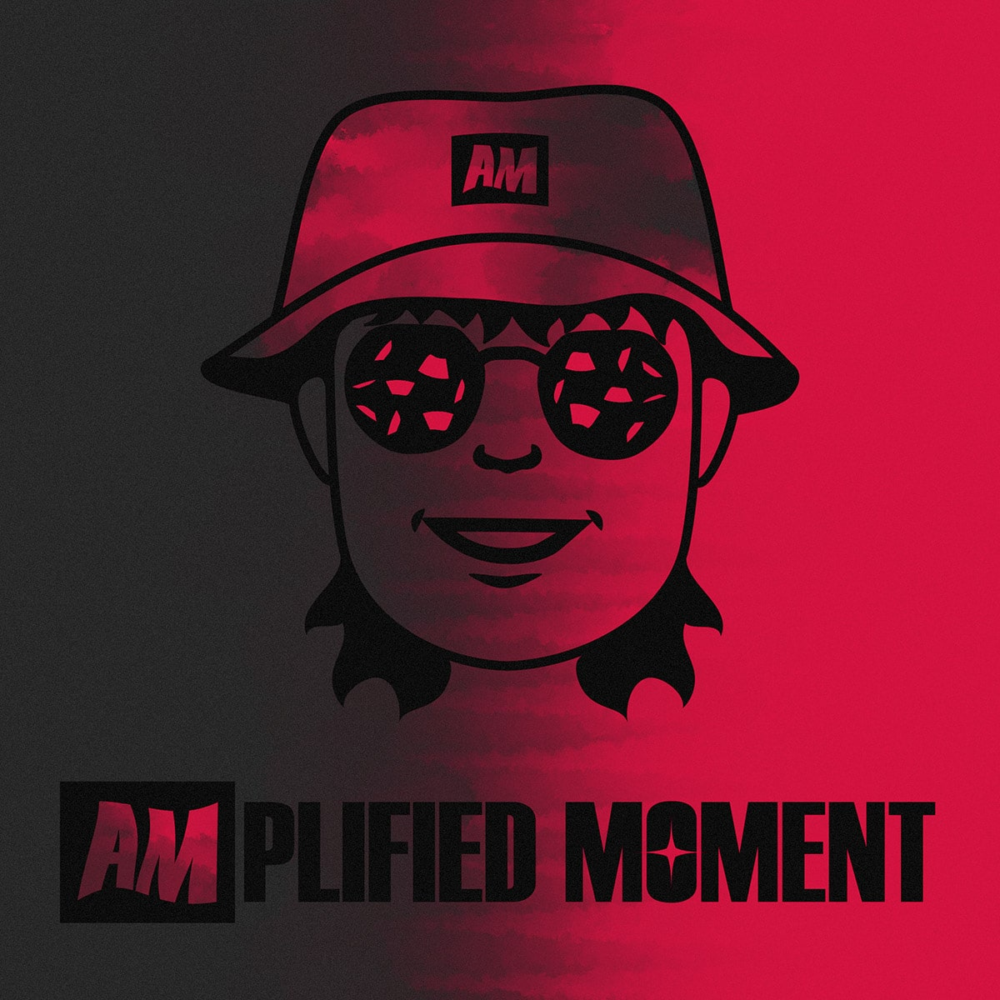
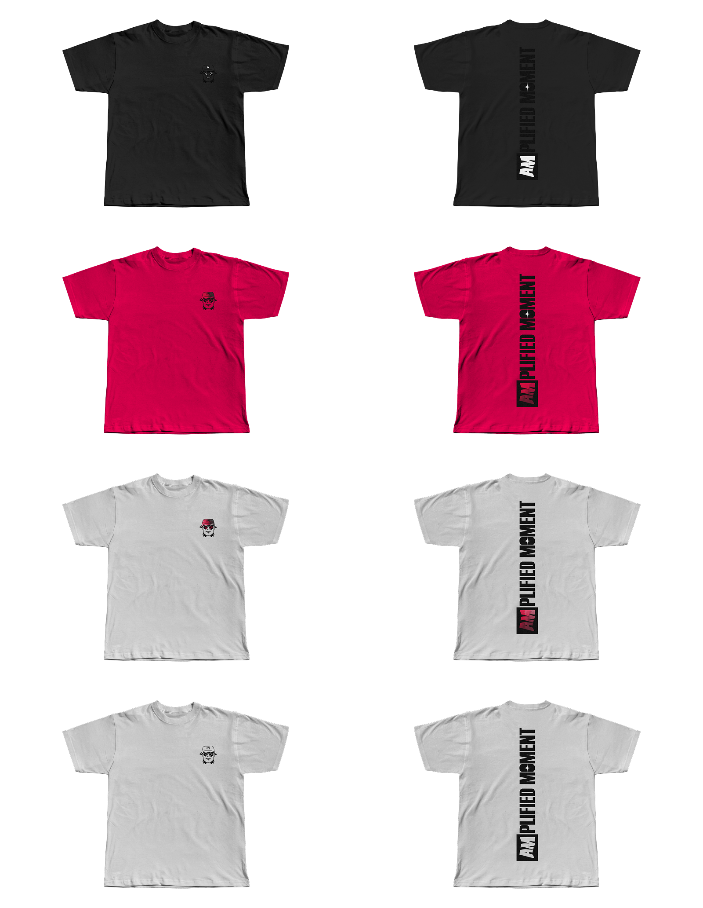
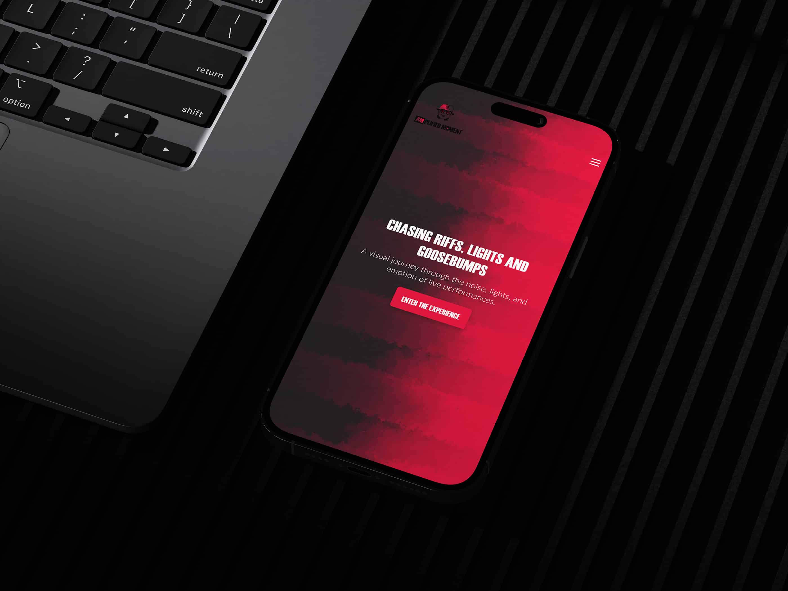
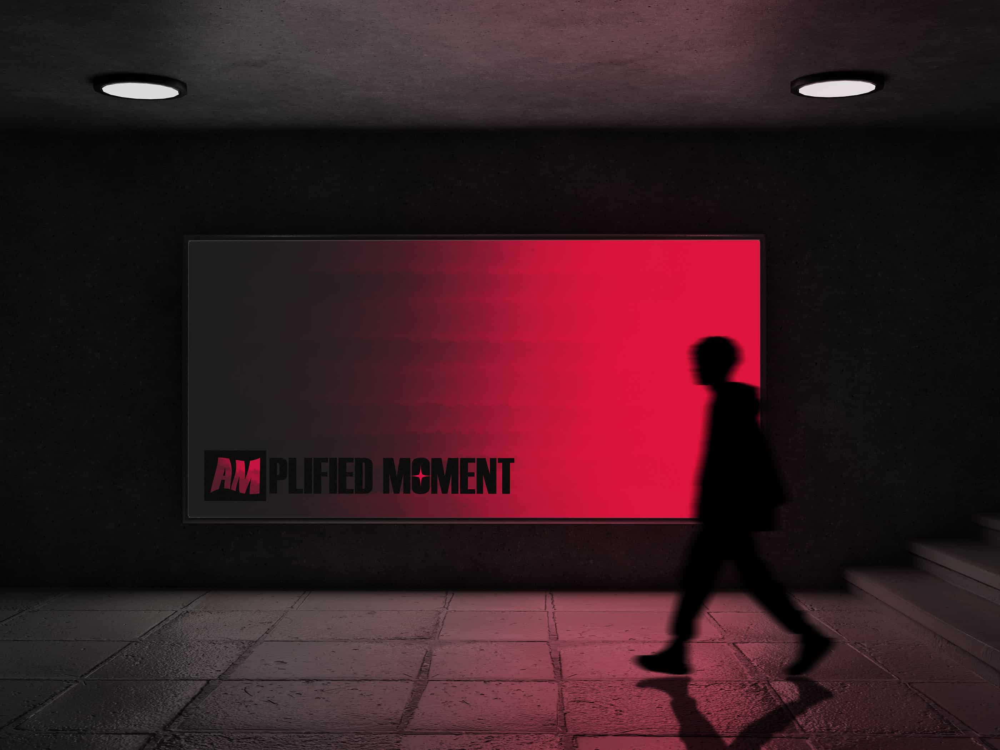

Amplified Moment
Amplified Moment is a personal branding project rooted in my love for concert photography. The goal was to create a visual identity that feels close to me and captures how I experience live music raw, immersive, and emotional. The identity was built through logo design, typography, color and supporting visuals with a focus on consistency and usability across different platforms. This project became both a personal exploration and a branding exercise, allowing me to experiment with visual identity systems while strengthening my approach to cohesion and tone. Concert photography is a personal hobby, so the logo is a direct reflection of me. It features sunglasses and a bucket hat elements I often wear with confetti reflected in the lenses to represent the joy of being fully present in the moment. The color palette centers around crimson and dark grey, supported by black and white variations. The logo consists of both an icon and a wordmark, designed to be used interchangeably depending on context. A strong sans serif font reinforces the bold, energetic tone of the brand.
Project overview
Date: November, 2025
Scope: Brand Identity, Illustration, Logo, UI
Programs: Adobe Photoshop, Adobe Illustrator, Figma








